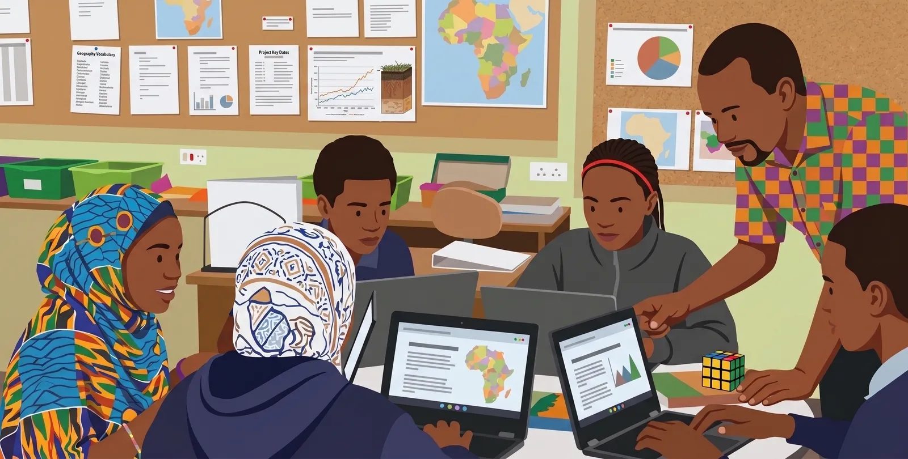
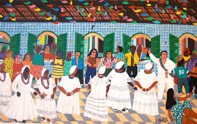
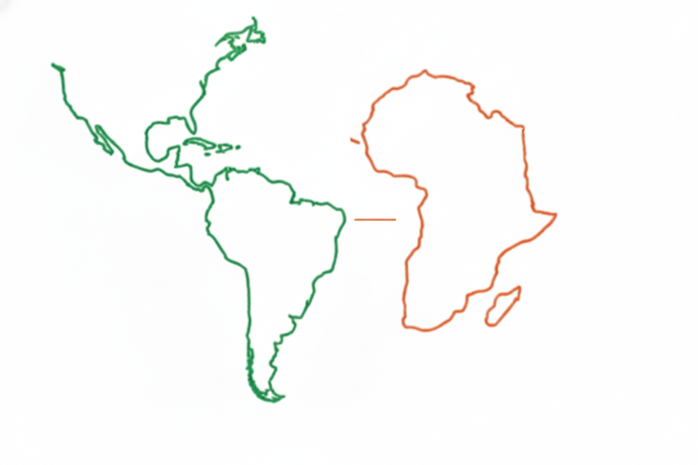

Coletividade
O círculo representa continuidade, encontro e construção compartilhada do conhecimento.
Conhecer a proposta →ANCESTRALIDADE • EDUCAÇÃO • TECNOLOGIA
A falta de materiais adequados às diferentes faixas etárias ainda é usada como justificativa para não ensinar conteúdos obrigatórios de história e cultura afro-brasileira. O AfroEduca nasceu para ajudar a mudar essa realidade.

POR QUE O AFROEDUCA?
A história e a cultura afro-brasileira fazem parte do currículo obrigatório, mas a ausência de materiais adequados às diferentes faixas etárias ainda é utilizada como justificativa para não trabalhar esses conteúdos.
O AfroEduca nasceu para ajudar a mudar essa realidade. A proposta é utilizar tecnologia e inteligência artificial para transformar conteúdos acadêmicos e históricos em materiais acessíveis, contextualizados e adequados a cada etapa de ensino, sem perder o rigor das informações e o protagonismo negro.
Assista a uma demonstração do laboratório, que adapta textos acadêmicos para diferentes faixas etárias e formatos pedagógicos.
Conhecer a demonstração →IDENTIDADE AFRO
Nossa linguagem visual parte do próprio logotipo: círculos como coletividade, linhas como conexão entre saberes e elos como memória entre gerações. Referências culturais específicas devem ser identificadas e contextualizadas, sem reduzir a diversidade africana a um único padrão.
O círculo representa continuidade, encontro e construção compartilhada do conhecimento.
Conhecer a proposta →
História, arte, cultura e cotidiano como parte central da aprendizagem.
Educação e legislação →
Diálogos históricos e culturais tratados com pluralidade, fontes e contexto.
Conhecer a abordagem →DEMONSTRAÇÃO DO PROJETO
O professor poderá enviar qualquer texto, escolher a faixa etária e receber um material adaptado, revisável e pronto para baixar. A geração real está em testes privados.
Entrada: artigo acadêmico sobre quilombos e resistência.
Adaptação: Fundamental II • Texto didático.
Os quilombos foram comunidades construídas por pessoas negras que resistiam à escravidão. Nesses espaços, diferentes grupos desenvolveram formas de organização, trabalho e preservação cultural.
1. Envie um texto ou indique um tema livre.
2. Escolha o público e o formato pedagógico.
3. Revise a prévia e baixe o documento completo.
O vídeo de uma sessão real será publicado aqui depois da gravação autorizada.
Entenda por que criamos o AfroEducaIMPACTO SOCIAL
Em 2026, a lei completa 23 anos. Alterou a LDB para tornar obrigatório o ensino de história e cultura afro-brasileira no ensino fundamental e médio, em escolas públicas e privadas.
Ampliou a redação da LDB para contemplar também a história e cultura indígena. O AfroEduca concentra-se na educação afrocultural, reconhecendo o contexto mais amplo da legislação.
Fontes oficiais: Lei 10.639/2003 · Lei 11.645/2008.
O desafio é ampliar o acesso a materiais de qualidade, contextualizados e apropriados para diferentes etapas de ensino, com autoria e validação docente.
TECNOLOGIA COM PROPÓSITO
A ferramenta pretende adaptar conteúdos livres para diferentes faixas etárias sem reduzir a complexidade histórica nem inventar referências. A geração real ficará restrita à área privada de testes enquanto avaliamos os limites gratuitos da API.
Quando uma cota for excedida, o laboratório mostrará uma mensagem clara, sem prometer uma geração que não ocorreu.
APOIE O AFROEDUCA
O projeto está em desenvolvimento. O uso de IA ainda não pode ser disponibilizado gratuitamente para todos; contribuições futuras poderão ajudar a custear os tokens e ampliar o acesso de escolas e professores.
Em breve divulgaremos uma forma segura e transparente de apoiar o projeto. Nenhuma contribuição financeira está sendo solicitada nesta página neste momento.
Conheça a Teclabs Info